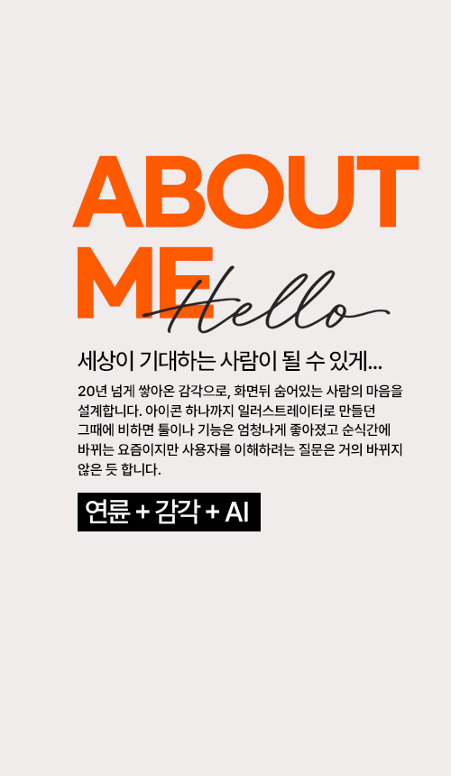

UI/UX DESIGNER AND CREATOR - YEOSANGHEE

늙크크 영크크
흔히 감각을 가지고 나이듦과 젊음을 나눈다. 하지만 시각은 개인적 취향일 뿐 UX를 받아들이는 것은 크게 다르 지 않으리라 생각한다. 니즈를 충족 하면서 기능을 방해하지 않는 보기좋 음을 추구하는 것, 새로움을 더해가는 것, 그렇게 묵묵히, 열심히 가려한다. 쉽지않던 리소스 부분에서 AI의 도움 을 받아가며 디자인을 만들기보다는 이야기하는 사람이 되고싶다.
밤샘이 일상
디자인의 폭을 넓혀 웹을 시작했고 나랑 더 맞는다는 느낌이 들었다. 처음으로 만든 창비 홈페이지를 보고 삼성경제연구소에서 연락이 왔고 들어가게되면서 나의 잠은 반이 날아가버렸다. 일과도 싸웠지만 내 완벽주의와의 싸움이 더 힘들었다. 하지만 ‘최상의 결과물’은 효율적인 프로세스와 자 기관리가 함께 해야한다는 것을 알게됐고 결과물은 대부분 긍정적인 평가를 받았다.
글자와 여백 편집디자인
미대를 졸업한 오빠 작업실에 종종 놀러가서 기웃거리다 책과 인쇄물이 나오는 과정과 맥을 능숙하게 다루는 오빠의 모습에 호기심 반, 진심 반으로 하나씩 배우기 시작했고 오빠 작업실 한 귀퉁이에서 늦은 시간까지 몰두하다가 대중교통이 끊기면 자전거를 타고 집까지 오면서 두려움도 없이 찬바람 마저 상쾌하던 20대 그땐, 열정 의 시작이었습니다.